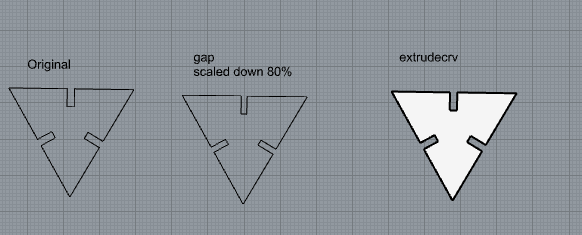
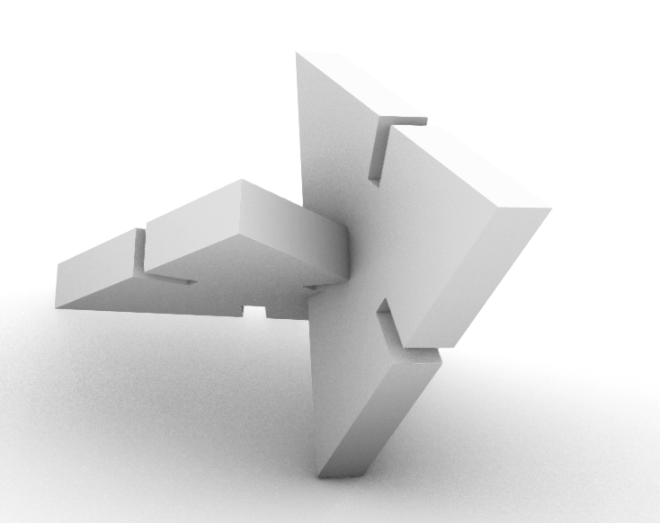
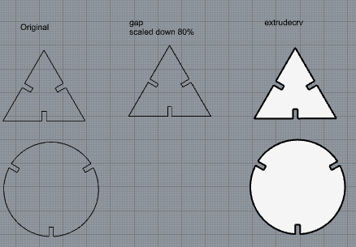
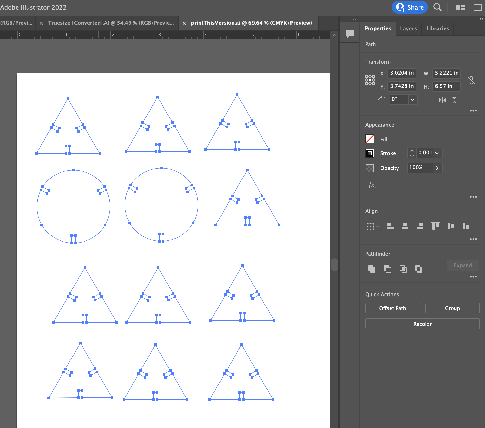
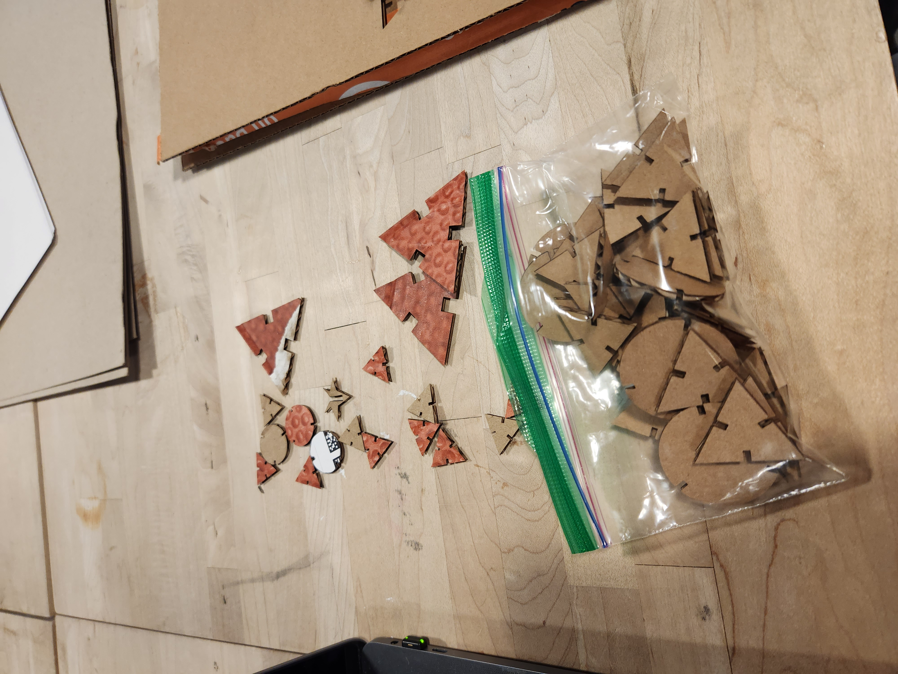
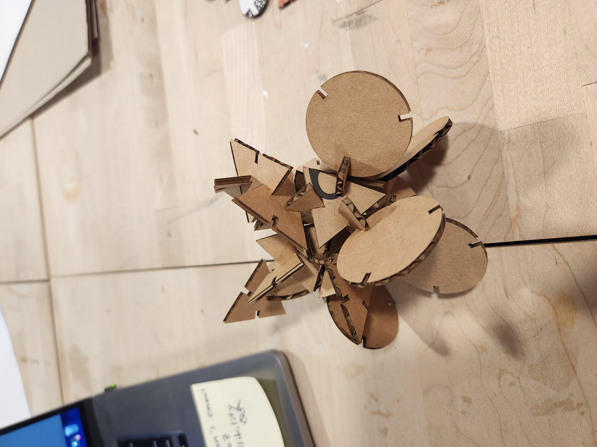

Assignment 1: Modelling and Laser Cutting
Here's my finished and assembled kit. I'll title it "Am I Picasso?"

For this assignment, I decided to keep it simple in creating shapes and slots as easy as possible. I followed our TA's tutorial on Rhino to create the triangular shape as my first attempt.
I was also following his tutorial on how to render and see if the pieces fit together...I'll need practice on this, but here's my attempt.
After I have followed the steps on scaling down on the gaps and extruding, I started creating an oval shape as my unique/second shape for the assignment with the same size as my triangular shape, only to realize the size between the gaps are not matching up. So I reamde the triangle to better match the circle.
The slots where the pieces will attach are all 2mm.
Once I was ready to try printing, I exported the file as illustrator. It took some trial and error, but I was able to export correctly thanks to some of our classmates help. My illustrator file looked like this.
Once it was correctly scaled, I was able to laser cut the pieces that could actually attach to each other. Although I made the slots 2mm, the pieces didn't scale correctly when I was exporting. When all was fixed, I was able to print out the 36 pieces.
I did not plan for what the finished product would look like, so I let my creativity take over at this point.

Source files
- Main A1 rhino file
- Rhino file used simply to export to illustrator
- Illustrator file used to laser cut
Acknowledgement--thanks everyone!
- Junchao Yang's tutorial video on Rhino
- Mary letting me observe laser cutting her assignment
- Petrina for helping me export correctly with the right scaling.